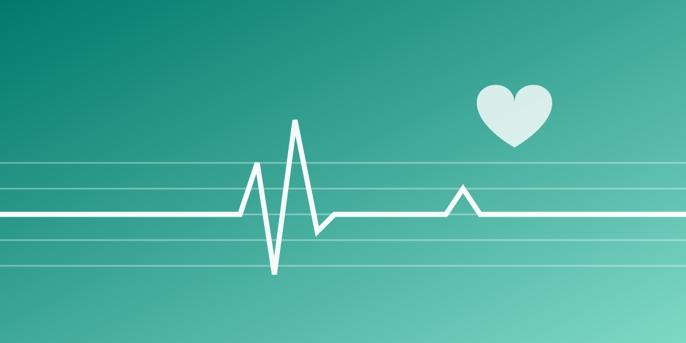

音楽は耳だけでなく、心臓や呼吸、身体の動きと一緒に「全身」で聴かれている。
感情は脳の中だけでなく、身体のあちこちに感じられます。それを地図にしたものが身体地図（ボディマップ）で、言葉を使わずに感情を測る方法になります。
私たちは、身体地図が3つの経路の重なりでできるとする「三分岐モデル」を提案しています。心拍や呼吸の信号が脳に届く経路、リズムが身体を動かす経路、そして「胸が高鳴る」のような比喩や文化が感じ方に反映される経路です。
この考えをもとに、心臓を模した触覚デバイスを開発しました。鼓動のような振動で心拍が引き込まれ、ボディマップに沿って刺激すると、全身に刺激するより音楽の心地よさが高まります。ソニーとの共同開発「NOUS ARE™」など、社会での活用も進めています。